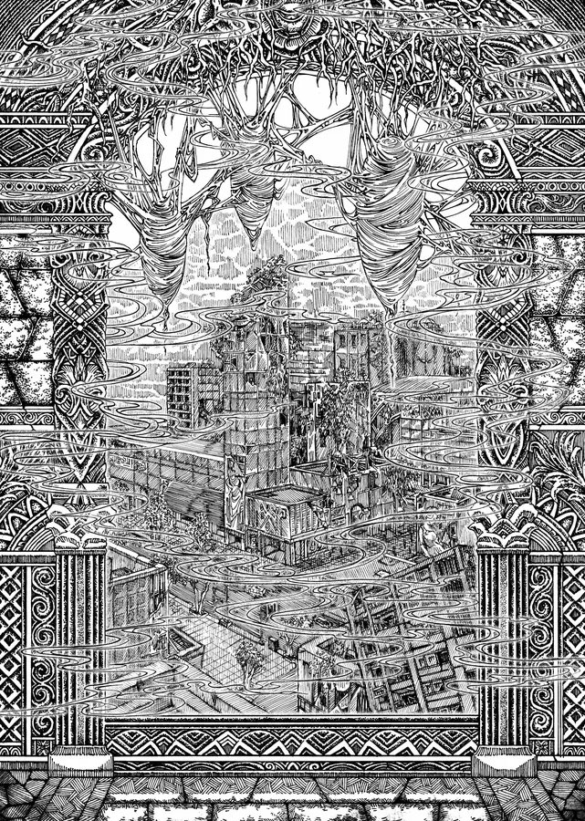

The First Epoch is also called the Chaos Epoch or Age of Chaos. The source chronology divides it into the Lost Era, the Era of Destruction, and the Era of Carnage. It ends with the rise of Aurmir as the first Ancient God.
Major spoilers for Lord of the Mysteries and related lore follow.
Image

Epoch timeline
The dates below are the epoch-local year ranges and durations used by the cited simplified chronology. The source leaves a one-year gap between the end of the Era of Destruction and the start of the Era of Carnage; this page preserves that wording rather than filling the gap.
| Era | Epoch years | Duration | Key transition |
|---|---|---|---|
| Lost Era | 0–564 | 564 years | Ends as the two Pillars’ convergence intensifies. |
| Era of Destruction | 564–566 | 2 years | The First Blasphemy Slate forms after the Pillars’ war. |
| Era of Carnage | 567–981 | 414 years | Aurmir’s rise as the first Ancient God ends the epoch. |
Each era name links to its corresponding row in the full world timeline. The reserved future-page target is kept on each row as data-page-target.
Creation traditions
Accounts passed down by the Orthodox Churches describe the Creator awakening from chaos, forming the world, and giving rise to the races and humanity. The City of Silver preserves a related creation tradition. These are inherited religious accounts, so they should be read separately from the article’s later section on “true history.”
One recurring theme in these traditions is that the earliest beings were powerful and dangerous. Humanity’s place in the world is connected to the Creator’s intervention and to the return—or withdrawal—of power.
Lost Era Years 0–564
The Lost Era is described as a period deliberately erased from history. On Old Earth, the Original Creator fully awakens, triggering an apocalypse that destroys most of humanity. A cataclysm reshapes the continents and seas, while the Creator’s internal fracture produces Sefirot, Uniquenesses, and Beyonder Characteristics. The Creator’s remains form a barrier that protects Earth from the Outer Deities.
As Beyonder Characteristics spread among humans, animals, and surviving creatures, they contribute to the emergence and mutation of many races. The source also describes the Primordial God Almighty and the Celestial Worthy of Heaven and Earth for Blessings contesting control of the Sefirot. Their accommodation of additional Sefirot drives them beyond the stable limit of a Pillar and marks the end of the Lost Era.
The detailed modern-world events and cosmological history are summarized from the source article; its cited chapters and author Q&A references are listed on the First Epoch source page.
Era of Destruction Years 564–566
The Primordial God Almighty and the Celestial Worthy make arrangements related to their possible resurrections. The Son of Chaos is sealed inside the Magic Wishing Lamp and becomes the Genie. The Celestial Worthy and Primordial God Almighty then fight a full-scale war that extinguishes the sun and plunges the world into darkness. The source notes that the battle’s exact circumstances remain unknown.
Both Pillars perish. The Primordial God Almighty’s corpse forms the First Blasphemy Slate in the Chaos Sea, with the Error Uniqueness beside it. The Celestial Worthy seals the other Sefirot to the Western Continent. The continent becomes isolated, and the Elves who left before the seal cannot return.
Era of Carnage Years 567–981
As the world slowly recovers, Beyonder races lose the restraints imposed by the two Pillars. Madness and the instinct to converge fuel conflicts among the races and the kin of chaos, spreading violence across the land and seas.
Omebella seeks to end the chaos. Zedus pursues the body bearing the Moon Uniqueness. Omebella eventually finds Aurmir guarding his parents’ remains and helps him regain some rationality. Zedus’s death and Aurmir’s birth as the first Ancient God—one not born from the Original Creator—mark the end of the First Epoch. At this point, the barrier’s countdown begins.